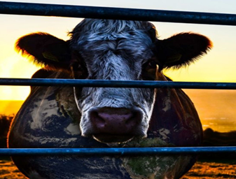

 Informações sobre o Filme: Tempo de Duração: 85 Minutos País: Estados Unidos da América Idioma: Inglês Lançamento: 21 de Agosto de 2014 Gênero: Documentário Classificação: 10+ Estreia no Brasil:21 de Agosto de 2014 Título Original: Cowspiracy: The Sustainability Secret Direção: Kip Andersen
Resenha Crítica
Kip Andersen, a fim de ajudar o planeta, havia parado de usar transportes, economizava água e praticava hábitos mais sustentáveis. No entanto, com o passar do tempo, percebeu que essas mudanças no seu modo de viver, não estava ajudando realmente o planeta e, por isso, passou a fazer questionamentos a si mesmo até se deparar com uma reportagem sobre a pecuária. Com um enredo bem elaborado e organizado, o documentário exibe sua jornada pesquisando e aprofundando no tema, descobrindo que: a pecuária é responsável por 51% dos gases do efeito estufa, sendo que os transportes são 13%. Com isso, ele pôde perceber que mesmo a pecuária sendo o autor principal do aumento das mudanças climáticas, tsunamis, aumento do efeito estufa e a queda das geleiras, as organizações ambientais não tem como foco a agricultura animal como principal problema, mas sim os combustíveis fósseis, instigando o interlocutor e levando-o a fazer questionamentos a respeito das políticas de proteção ambiental seguida pelos países.
A prática de criação de gado, além de ser uma importante atividade econômica, compõe a cadeia alimentar humana e, por isso, torna-se um alvo muito grande a ser atacado. Falar sobre diminuição da ingestão de carne na alimentação e criação de gado, afrontaria grandes investidores e isso causa em perdas de financiamento para os fundos ambientais arrecadados. Dessa forma, outros pontos são trabalhados como foco em produzir gases poluentes e agredir o planeta terra. Inclusive, o próprio documentário perdeu financiamento quando souberam o assunto abordado por ele e o questionamento levantando. Isso, torna- o ainda mais interessante e de grande relevância social, pois corrobora a veracidade dos fatos abordado por ele.
Nos últimos vinte anos no Brasil, mais de vinte mil ativistas foram mortos, dentre eles, a freira que morava no Pará e falava abertamente sobre os riscos e prejuízos que a pecuária trazia, Dorathy Stong, assassinada voltando para sua casa por um pistoleiro contratado pela indústria do gado. Os fatos expostos na película, levantam uma série de perguntas sobre o meio ambiente e o trabalho que as organizações ambientais dizem realizar para ajudá-lo, transmitindo, além de tudo, uma mensagem de demasiada importância sobre os danos que o ser humano causa na natureza. Seu conteúdo, apesar de ser necessário para todos, chama bastante atenção das pessoas veganas ou vegetarianas, visto que diz respeito sobre o consumo de carne.
Temas Propostos
O meio ambiente e a questão da sustentabilidade: